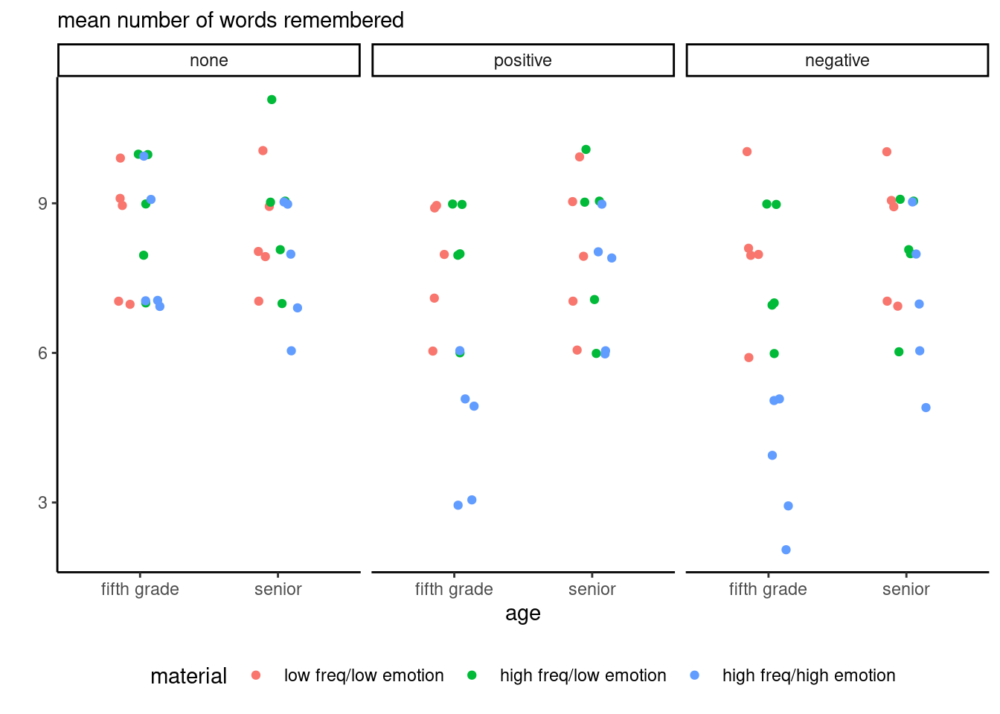

There’s a set of videos that walks through each section below. To make it easier for you to jump around the video examples, I cut the long video into smaller pieces and included them all in one YouTube playlist.
You can also watch the playlist (and skip around to different sections) here:
Notebook
The purpose of this little demonstration is to reproduce the results from chapter 21 and 22 of Keppel & Wickens (2004), which were performed manually, using instead the emmeans package. Many of the manipulations are intricate.
We consider fictional data from Keppel & Wickens (2004) for a study on
the effects of verbal feedback given during the acquisition of different types of learning material on memory tested one week later.
Data description
There are three factors: the first is feedback, which indicates the type of verbal feedback received by the participant: either none (\(a_1\)) to serve as control group, positive (\(a_2\)) or negative (\(a_3\)) feedback. The second factor is related to the type of learning material, one of low-frequency words with low emotional content (\(b_1\)), high-frequency words with low emotional content (\(b_2\)) and finally high-frequency words with high emotional content (\(b_3\)). The third factor is the target population: either fifth graders (\(c_1\)) or high school seniors (\(c_2\)). While most of the interest is in the first two factors, the three-way ANOVA is a more efficient design if we want to study both age groups.
The response variable is the number of words remembered (words) after one week. The design is balanced: there are \(r=5\) replications for each scenario, so \(n=3 \times 3 \times 2 \times 5\) observations. If we fit the three-way model with all two ways and three way interactions, we need to estimate 19 parameters (18 means and one variance). We model each participant response assuming the measurements are independent and \(Y_{ijkr} \sim \mathsf{No}(\mu_{ijk}, \sigma^2)\): this indicates that each subgroup (\(a_i, b_j, c_k\)) has a different (theoretical) average \(\mu_{ijk}\) and a common variance \(\sigma^2\). The estimates \(\widehat{\mu}_{ijk}\) are simply the sample averages of each group, whereas the pooled variance estimator, \[\widehat{\sigma}^2 = \frac{1}{72}\sum_{i=1}^3 \sum_{j=1}^3 \sum_{k=1}^2 \sum_{r=1}^5 (y_{ijkr} - \widehat{\mu}_{ijk})^2,\] is the sum of squared difference between replicate observations and their group average, divided by the residual degrees of freedom (total number of observations minus number of mean parameters).
The model can be reparametrized in terms of main effects and interaction: overall average for each factor, average of residual affect after accounting for effects of row, columns and depth and finally residual affect for the three-way. This parametrization is \[\begin{align*}\underset{\text{theoretical average}}{\mathsf{E}(Y_{ijkr})} &= \quad \underset{\text{global mean}}{\mu} \\ &\quad +\underset{\text{main effects}}{\alpha_i + \beta_j + \gamma_k} \\ & \quad + \underset{\text{two-way interactions}}{(\alpha\beta)_{ij} + (\alpha\gamma)_{ik} + (\beta\gamma)_{jk}} \\ & \quad + \underset{\text{three-way interaction}}{(\alpha\beta\gamma)_{ijk}}\end{align*}\]
Setup
What are comparisons of interest? We may be interested in the effect of feedback, for example comparing whether any form of feedback increases word retention. Thus, we could look at the marginal contrast \(\mu_{1..} = \frac{1}{2}(\mu_{2..} + \mu_{3..})\), in essence treating the whole model as a one-way ANOVA but using all the data to estimate the standard deviation \(\sigma\). For a balanced sample, the estimated average for example of the control group none, \(\widehat{\mu}_{1..}\), would be the sample average of the 30 participants assigned to this experimental condition.
We can proceed similarly for the other factors. One could be interested in whether the type of learning material impacts retention (overall effect), or if there are difference between high and low emotional content for high-frequency occurrences (\(b_2\) and \(b_3\)); amounting to ignoring all observations for the low emotion low-frequency group.
The first step is to load the data and the packages needed for the analysis.
Code
# Load packageslibrary(dplyr)library(ggplot2)library(emmeans)# Load datadata(words, package ='hecedsm')# Check balancextabs(~feedback + age + material, data = words)
, , material = low freq/low emotion
age
feedback fifth grade senior
none 5 5
positive 5 5
negative 5 5
, , material = high freq/low emotion
age
feedback fifth grade senior
none 5 5
positive 5 5
negative 5 5
, , material = high freq/high emotion
age
feedback fifth grade senior
none 5 5
positive 5 5
negative 5 5
This is a 3 by 3 by 2 factorial design with \(r=5\) replicates.
Code
model <-aov(words ~ feedback * material * age,data = words)anova(model)
Analysis of Variance Table
Response: words
Df Sum Sq Mean Sq F value Pr(>F)
feedback 2 26.867 13.433 7.1118 0.001519 **
material 2 64.867 32.433 17.1706 7.993e-07 ***
age 1 14.400 14.400 7.6235 0.007304 **
feedback:material 4 14.667 3.667 1.9412 0.112829
feedback:age 2 8.600 4.300 2.2765 0.109987
material:age 2 16.200 8.100 4.2882 0.017397 *
feedback:material:age 4 10.000 2.500 1.3235 0.269461
Residuals 72 136.000 1.889
---
Signif. codes: 0 '***' 0.001 '**' 0.01 '*' 0.05 '.' 0.1 ' ' 1
Since the data are balanced, we can use the aov function and look at the analysis of variance produced by aov.1 To get all pairwise and the triplewise interaction, we use response ~ factor1 * factor2 * factor3 notation. Since we have replications, the full model doesn’t fit the data exactly and there are residual observations to estimate the variability, but estimating reliably different variance in each of the 18 subgroup wouldn’t be possible with 5 observations. We can see that the three-way interaction isn’t significative, and the only two-way effect is for material:age.
Interaction plot
We can try to infer whether there is an interaction by looking at averages for each pair of variable at a time, and then at all three factors concurrently. These plots theoretically are used to demonstrate the impact of interactions, but in practice the sample estimates are noisy proxies of the true subgroup averages.
We can confirm our findings by looking at the interaction plot, showing the group average for each combination of the factors.
Code
words |>group_by(feedback, material, age) |>summarize(meanwords =mean(words)) |>ggplot(mapping =aes(x = feedback,y = meanwords,group = material,color = material)) +geom_line() +# connect the dotsfacet_wrap(~age) +labs(subtitle ="mean number of words remembered",y ="") +theme_classic() +theme(legend.position ="bottom")
These summary statistics hide the raw data: due to the discreteness of the response, which consists of counts, we can slightly perturb observations and jitter them.
Code
ggplot(data = words,mapping =aes(x = age,y = words,group = material,color = material)) +geom_point(position =position_jitterdodge(jitter.height =0.1,dodge.width =0.3)) +facet_wrap(~feedback) +# wrap by third variabletheme_classic() +# change default themetheme(legend.position ="bottom") +# move captionlabs(subtitle ="mean number of words remembered",y ="")

Figure 1: Individual results for an experiment on the impact of verbal feedback on retention of information.
The high frequency/high emotion group has significantly lower retention depending on feedback, with seemingly no difference with other material type when there is no verbal feedback, but a strong decrease for positive and even stronger for negative feedback. By contrasts, there is little to no effect with high school seniors, suggesting that the experimental manipulation has limited impact for these groups.
Main effects and contrasts
The whole purpose of Chapters 21 and 22 is to show how we can explore the three-way factorial design and extract information by treating it as a one-way ANOVA with 18 groups, a series of two-way ANOVA, etc.
We look at the estimated marginal means and start by computing the marginal mean by averaging over levels of material and age, since there did not seem to be interaction between feedback and the other variables.
As before with the emmeans package, we specify the variables we want to keep in specs, the other being ‘marginalized out’ by ignoring the counts. The package will print a warning since the model includes an interaction, indicating that the output is potentially misleading.
Code
margA <-emmeans(model, specs ="feedback")margA
feedback emmean SE df lower.CL upper.CL
none 8.37 0.251 72 7.87 8.87
positive 7.30 0.251 72 6.80 7.80
negative 7.13 0.251 72 6.63 7.63
Results are averaged over the levels of: material, age
Confidence level used: 0.95
Since the data are balanced, this is simply the average words recalled per feedback group. We can check that this is indeed the mean of each word count by feedback by computing the summary statistics and comparing them with the output of emmeans:
Code
words |>group_by(feedback) |>summarize(mean =mean(words))
# A tibble: 3 × 2
feedback mean
<fct> <dbl>
1 none 8.37
2 positive 7.3
3 negative 7.13
Marginal contrast
We next compute a marginal contrast by comparing between no-feedback and the average of positive and negative. This amounts to treating our data as a one-way ANOVA and computing contrasts as usual.
The null hypothesis is \[\mathscr{H}_0: \mu_{\text{none}..} = \frac{1}{2} \left(\mu_{\text{pos}..} + \mu_{\text{neg}..}\right)\] which can be rexpressed in terms of contrast vector as \((1, -0.5, -0.5)\) or any non-zero multiple of this solution.
contrast estimate SE df t.ratio p.value
interaction 1.15 0.307 72 3.742 0.0004
Results are averaged over the levels of: material, age
Simple effects
Since the two-way interaction between factors material and age is significant, we can test for differences between levels of material within each value of age (averaging over all levels of feedback).
To do this with emmeans, we first marginalize out over feedback by keeping only the two other variables in specs, then perform an \(F\) test for each value of age by using joint_tests and specifying the analysis is conditional on age.
age = fifth grade:
model term df1 df2 F.ratio p.value
material 2 72 19.306 <.0001
age = senior:
model term df1 df2 F.ratio p.value
material 2 72 2.153 0.1236
We could also look at simple contrasts by levels of age comparing the three material and looking at low versus high emotions. This amounts to reducing data to a two-way ANOVA in a first step, then taking each depth (age) group in turn and computing a contrast.
Using the notation \(A \times B \times C\) to denote the feedback, material and age groups, this compares
\[\mathscr{H}_0: \frac{1}{2} \left(\mu_{.1k} + \mu_{.2k}\right) = \mu_{.3k}\] for age group \(k\).
In both cases, we get two sets of tests statistics and \(p\)-values since there are two age groups.
age = fifth grade:
contrast estimate SE df t.ratio p.value
contrast -2.7 0.435 72 -6.212 <.0001
age = senior:
contrast estimate SE df t.ratio p.value
contrast -0.9 0.435 72 -2.071 0.0420
Results are averaged over the levels of: feedback
There is strong (unadjusted) differences between low and high emotion for fifth grades, but the effect for senior is smaller and quite uncertain.
Interaction components
The next potential object of interest is the interaction components based on marginal means.
Keppel & Wickens (2004) compare the average of \(b_2\) and \(b_3\) between age groups, fixing the frequency and varying only the emotional content.
The first step with emmeans is to specify which variables to keep, then slice by age group. This gives us a set of 3 averages per age group. Next, we set up the contrast vector to compute for each age group. The last call, to joint_tests(), proceeds with comparing whether the average contrast results are the same in each age group by comparing the two. There is some evidence that high emotion words has a different impact, independent of feedback.
model term df1 df2 F.ratio p.value
age 1 72 6.432 0.0134
We could also compute differences between feedback and material. Marginalizing over age yields a total of 9 cells: we treat the resulting two-way design as a one-way design with nine groups and simply compute the contrast vector, assigning weight zero for the low-frequency and low emotion group and then looking at none (weight \(1\)) and the average of positive and negative feedback (weights of \(-0.5\)). Since we want to compare this difference between \(b_2\) and \(b_3\), we give similar weights for the last three groups, but instead of \((1, -0.5, -0.5)\), we flip the signs.
contr <-list("none vs feedback for b2 vs b3"=c(0, 0, 0, -1, 0.5, 0.5, 1, -0.5, -0.5))emmAB |>contrast(method = contr)
contrast estimate SE df t.ratio p.value
none vs feedback for b2 vs b3 1.4 0.753 72 1.860 0.0670
Results are averaged over the levels of: age
Three factor interaction
The most complicated type of comparison is the three factor interaction (which wasn’t deemed significant). We could look at a particular combination by looking at the difference of difference. This is the same as what we just computed, but this time we will compare this difference of difference between age groups to see if it is the same.
\(A\) (feedback): no feedback vs feedback (none vs average of pos and neg),
\(B\) (material): comparing low vs high emotional feedback (b2 vs b3)
contrast estimate SE df t.ratio p.value
contrast 3 1.51 72 1.993 0.9992
P value adjustment: scheffe method with rank 17
We can adjust for multiplicity by using Scheffé’s method, but we need to set up the rank of the test: for general contrasts in a two-way slice, this would be the number of groups minus one, so 8 if we look at feedback and material, 2 if we look only at the feedback type, etc.
There is no evidence here that this setup comparison for looking at differences for feedback among high frequency groups is any different between age groups.
References
Keppel, G., & Wickens, T. D. (2004). Design and analysis: A researcher’s handbook. Pearson Prentice Hall.
Footnotes
With unbalanced data, we would need to fit the model using lm and use car::Anova to get type 2 or 3 effects.↩︎
Source Code
---title: "Three-way analysis of variance"linktitle: "Three-way ANOVA"type: docseditor_options: chunk_output_type: consoleexecute: echo: true eval: true message: false warning: false cache: true fig-align: 'center' out-width: '80%'---```{r slides-videos, echo=FALSE, include=FALSE}source(here::here("R", "youtube-playlist.R"))playlist_id <-"PLUB8VZzxA8IvjcV7Yl-OW_9KI6f_2K5HY"slide_details <- tibble::tribble(~title, ~youtube_id,"Introduction", "SHhP_TfZGVM","Interaction plots", "I63CNxonlow","Marginal contrast and simple effects", "KLLBNQhD0rE","More contrasts and interactions", "WIoxZZ4pvlE","SPSS walkthrough", "_imWUkEQVo8")```# VideosThe **R** code created in the video [can be downloaded here](/example/threewayanova.R) and the [SPSS code here](/example/threeway.sps).```{r show-youtube-list, echo=FALSE, results="asis"}youtube_list(slide_details, playlist_id, example =TRUE)```# NotebookThe purpose of this little demonstration is to reproduce the results from chapter 21 and 22 of @Keppel/Wickens:2004, which were performed manually, using instead the `emmeans` package. Many of the manipulations are intricate.We consider fictional data from @Keppel/Wickens:2004 for a study on > the effects of verbal feedback given during the acquisition of different types of learning material on memory tested one week later.## Data descriptionThere are three factors: the first is `feedback`, which indicates the type of verbal feedback received by the participant: either `none` ($a_1$) to serve as control group, `positive` ($a_2$) or `negative` ($a_3$) feedback. The second factor is related to the type of learning material, one of low-frequency words with low emotional content ($b_1$), high-frequency words with low emotional content ($b_2$) and finally high-frequency words with high emotional content ($b_3$). The third factor is the target population: either fifth graders ($c_1$) or high school seniors ($c_2$). While most of the interest is in the first two factors, the three-way ANOVA is a more efficient design if we want to study both age groups.The response variable is the number of words remembered (`words`) after one week. The design is balanced: there are $r=5$ replications for each scenario, so $n=3 \times 3 \times 2 \times 5$ observations. If we fit the three-way model with all two ways and three way interactions, we need to estimate 19 parameters (18 means and one variance). We model each participant response assuming the measurements are independent and $Y_{ijkr} \sim \mathsf{No}(\mu_{ijk}, \sigma^2)$: this indicates that each subgroup ($a_i, b_j, c_k$) has a different (theoretical) average $\mu_{ijk}$ and a common variance $\sigma^2$. The estimates $\widehat{\mu}_{ijk}$ are simply the sample averages of each group, whereas the pooled variance estimator, $$\widehat{\sigma}^2 = \frac{1}{72}\sum_{i=1}^3 \sum_{j=1}^3 \sum_{k=1}^2 \sum_{r=1}^5 (y_{ijkr} - \widehat{\mu}_{ijk})^2,$$is the sum of squared difference between replicate observations and their group average, divided by the residual degrees of freedom (total number of observations minus number of mean parameters).The model can be reparametrized in terms of main effects and interaction: overall average for each factor, average of residual affect after accounting for effects of row, columns and depth and finally residual affect for the three-way. This parametrization is $$\begin{align*}\underset{\text{theoretical average}}{\mathsf{E}(Y_{ijkr})} &= \quad \underset{\text{global mean}}{\mu} \\ &\quad +\underset{\text{main effects}}{\alpha_i + \beta_j + \gamma_k} \\ & \quad + \underset{\text{two-way interactions}}{(\alpha\beta)_{ij} + (\alpha\gamma)_{ik} + (\beta\gamma)_{jk}} \\ & \quad + \underset{\text{three-way interaction}}{(\alpha\beta\gamma)_{ijk}}\end{align*}$$## SetupWhat are comparisons of interest? We may be interested in the effect of feedback, for example comparing whether any form of feedback increases word retention. Thus, we could look at the marginal contrast $\mu_{1..} = \frac{1}{2}(\mu_{2..} + \mu_{3..})$, in essence treating the whole model as a one-way ANOVA but using all the data to estimate the standard deviation $\sigma$. For a balanced sample, the estimated average for example of the control group `none`, $\widehat{\mu}_{1..}$, would be the sample average of the 30 participants assigned to this experimental condition.We can proceed similarly for the other factors. One could be interested in whether the type of learning material impacts retention (overall effect), or if there are difference between high and low emotional content for high-frequency occurrences ($b_2$ and $b_3$); amounting to ignoring all observations for the low emotion low-frequency group. The first step is to load the data and the packages needed for the analysis.```{r}# Load packageslibrary(dplyr)library(ggplot2)library(emmeans)# Load datadata(words, package ='hecedsm')# Check balancextabs(~feedback + age + material, data = words)```This is a 3 by 3 by 2 factorial design with $r=5$ replicates.```{r}model <-aov(words ~ feedback * material * age,data = words)anova(model)```Since the data are balanced, we can use the `aov` function and look at the analysis of variance produced by `aov`.^[With unbalanced data, we would need to fit the model using `lm` and use `car::Anova` to get type 2 or 3 effects.] To get all pairwise and the triplewise interaction, we use `response ~ factor1 * factor2 * factor3` notation. Since we have replications, the full model doesn't fit the data exactly and there are residual observations to estimate the variability, but estimating reliably different variance in each of the 18 subgroup wouldn't be possible with 5 observations. We can see that the three-way interaction isn't significative, and the only two-way effect is for `material:age`.## Interaction plot We can try to infer whether there is an interaction by looking at averages for each pair of variable at a time, and then at all three factors concurrently. These plots theoretically are used to demonstrate the impact of interactions, but in practice the sample estimates are noisy proxies of the true subgroup averages.We can confirm our findings by looking at the interaction plot, showing the group average for each combination of the factors.```{r}words |>group_by(feedback, material, age) |>summarize(meanwords =mean(words)) |>ggplot(mapping =aes(x = feedback,y = meanwords,group = material,color = material)) +geom_line() +# connect the dotsfacet_wrap(~age) +labs(subtitle ="mean number of words remembered",y ="") +theme_classic() +theme(legend.position ="bottom")```These summary statistics hide the raw data: due to the discreteness of the response, which consists of counts, we can slightly perturb observations and jitter them. ```{r}#| label: fig-raw-words#| fig.cap: "Individual results for an experiment on the impact of verbal feedback on retention of information."ggplot(data = words,mapping =aes(x = age,y = words,group = material,color = material)) +geom_point(position =position_jitterdodge(jitter.height =0.1,dodge.width =0.3)) +facet_wrap(~feedback) +# wrap by third variabletheme_classic() +# change default themetheme(legend.position ="bottom") +# move captionlabs(subtitle ="mean number of words remembered",y ="")```The high frequency/high emotion group has significantly lower retention depending on feedback, with seemingly no difference with other material type when there is no verbal feedback, but a strong decrease for positive and even stronger for negative feedback. By contrasts, there is little to no effect with high school seniors, suggesting that the experimental manipulation has limited impact for these groups.## Main effects and contrastsThe whole purpose of Chapters 21 and 22 is to show how we can explore the three-way factorial design and extract information by treating it as a one-way ANOVA with 18 groups, a series of two-way ANOVA, etc.We look at the estimated marginal means and start by computing the marginal mean by averaging over levels of material and age, since there did not seem to be interaction between feedback and the other variables.As before with the `emmeans` package, we specify the variables we want to keep in `specs`, the other being 'marginalized out' by ignoring the counts. The package will print a warning since the model includes an interaction, indicating that the output is potentially misleading.```{r}margA <-emmeans(model, specs ="feedback")margA```Since the data are balanced, this is simply the average words recalled per feedback group. We can check that this is indeed the mean of each word count by feedback by computing the summary statistics and comparing them with the output of `emmeans`:```{r}words |>group_by(feedback) |>summarize(mean =mean(words))```### Marginal contrastWe next compute a marginal contrast by comparing between no-feedback and the average of positive and negative. This amounts to treating our data as a one-way ANOVA and computing contrasts as usual.The null hypothesis is $$\mathscr{H}_0: \mu_{\text{none}..} = \frac{1}{2} \left(\mu_{\text{pos}..} + \mu_{\text{neg}..}\right)$$ which can be rexpressed in terms of contrast vector as $(1, -0.5, -0.5)$ or any non-zero multiple of this solution.```{r}contrast(object = margA,method =list(interaction =c(1, -0.5, -0.5)))```### Simple effectsSince the two-way interaction between factors `material` and `age` is significant, we can test for differences between levels of `material` within each value of `age` (averaging over all levels of `feedback`).To do this with `emmeans`, we first marginalize out over feedback by keeping only the two other variables in `specs`, then perform an $F$ test for each value of `age` by using `joint_tests` and specifying the analysis is conditional on `age`.```{r}simpleBpC <-emmeans(model,specs =c("material", "age")) |>joint_tests(by ="age")simpleBpC```We could also look at **simple contrasts** by levels of age comparing the three material and looking at low versus high emotions. This amounts to reducing data to a two-way ANOVA in a first step, then taking each depth (age) group in turn and computing a contrast.Using the notation $A \times B \times C$ to denote the feedback, material and age groups, this compares$$\mathscr{H}_0: \frac{1}{2} \left(\mu_{.1k} + \mu_{.2k}\right) = \mu_{.3k}$$for age group $k$. In both cases, we get two sets of tests statistics and $p$-values since there are two age groups.```{r}# Simple contrastsmargBC <-emmeans(model,specs =c("material", "age"),by ="age")levels(margBC)margBC |>contrast(method =list(contrast =c(-0.5, -0.5, 1)))```There is strong (unadjusted) differences between low and high emotion for fifth grades, but the effect for senior is smaller and quite uncertain.### Interaction componentsThe next potential object of interest is the interaction components based on marginal means. @Keppel/Wickens:2004 compare the average of $b_2$ and $b_3$ between age groups, fixing the frequency and varying only the emotional content. The first step with `emmeans` is to specify which variables to keep, then slice by age group. This gives us a set of 3 averages per age group. Next, we set up the contrast vector to compute for each age group. The last call, to `joint_tests()`, proceeds with comparing whether the average contrast results are the same in each age group by comparing the two. There is some evidence that high emotion words has a different impact, independent of feedback. ```{r}emmeans(model,specs =c("material", "age"),by ="age") |>contrast(method =list(b2vsb3 =c(0, 1, -1))) |>joint_tests()```We could also compute differences between feedback and material. Marginalizing over age yields a total of 9 cells: we treat the resulting two-way design as a one-way design with nine groups and simply compute the contrast vector, assigning weight zero for the low-frequency and low emotion group and then looking at none (weight $1$) and the average of positive and negative feedback (weights of $-0.5$). Since we want to compare this difference between $b_2$ and $b_3$, we give similar weights for the last three groups, but instead of $(1, -0.5, -0.5)$, we flip the signs.```{r}emmAB <-emmeans(model, specs =c("feedback", "material"))levels(emmAB)contr <-list("none vs feedback for b2 vs b3"=c(0, 0, 0, -1, 0.5, 0.5, 1, -0.5, -0.5))emmAB |>contrast(method = contr)```### Three factor interactionThe most complicated type of comparison is the three factor interaction (which wasn't deemed significant). We could look at a particular combination by looking at the difference of difference. This is the same as what we just computed, but this time we will compare this difference of difference between age groups to see if it is the same.- $A$ (`feedback`): no feedback vs feedback (`none` vs average of `pos` and `neg`), - $B$ (`material`): comparing low vs high emotional feedback (`b2` vs `b3`) - $C$: fifth graders vs seniors```{r}threewaycontrast <-emmeans(model, specs =c("feedback", "material","age")) |>contrast(method =list(contrast =c(0, 0, 0, -1, 0.5, 0.5,1, -0.5, -0.5, 0, 0, 0,1, -0.5, -0.5, -1, 0.5, 0.5)))summary(threewaycontrast, adjust ="scheffe",scheffe.rank =17)```We can adjust for multiplicity by using Scheffé's method, but we need to set up the rank of the test: for general contrasts in a two-way slice, this would be the number of groups minus one, so 8 if we look at feedback and material, 2 if we look only at the feedback type, etc.There is no evidence here that this setup comparison for looking at differences for feedback among high frequency groups is any different between age groups.